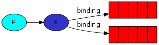

发布模式
Exchange
RabbitMQ中生产者只会把消息发送给exchange，再由exchange推送给队列

Figure 1: exchanges
列出所有的Exchange
$ sudo rabbitmqctl list_exchanges Listing exchanges ... logs fanout amq.direct direct amq.topic topic amq.fanout fanout amq.headers headers ...done.
Publish
前面描述的工作队列只会把信息发送给一个消费者，而发布模式则是把信息广播给多个消费者

Figure 2: publish & subscribe
- 声明fanout exchange
channel.exchange_declare(exchange='logs', type='fanout')
- 生产者：发布fanout exchange
channel.basic_publish(exchange='logs', routing_key='', body=message)
- 消费者：创建临时队列，队列拥有随机名字,并且被消费后就删除
#not provide a queue name while declaring result = channel.queue_declare(exclusive=True) #once disconnect consumer, delete the queue
- 消费者：绑定exchange和queue

Figure 3: bindings
channel.queue_bind(exchange='logs',
queue=result.method.queue)
显示所有的绑定
$ rabbitmqctl list_bindings Listing bindings ... logs exchange amq.gen-JzTY20BRgKO-HjmUJj0wLg queue [] logs exchange amq.gen-vso0PVvyiRIL2WoV3i48Yg queue [] ...done.
测试
启动一个消费者把日志记录到文件
$ python receive_logs.py > logs_from_rabbit.log
再启动一个消费者把日志打印到控制台
$ python receive_logs.py
发送一个日志给exchange，可以看到两个消费者都接收并处理了日志
$ python emit_log.py